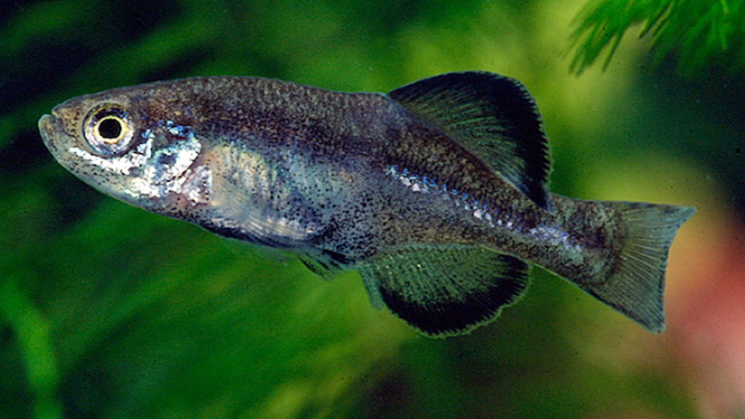

Systématique
- Ordre : Cyprinodontiformes
- Famille : Goodeidae
- Genre : Girardinichthys
- Espèce : G. viviparus
- Auteur : (Bustamante, 1837)

Girardinichthys viviparus est un poisson vivipare d'importance historique, étant l'un des premiers goodeidés décrits. Endémique du bassin de la vallée de Mexico, il présente une morphologie typique des espèces de haute altitude, avec des nageoires bien développées et un corps robuste.
Le mâle atteint généralement 5 cm, tandis que la femelle peut être plus grande, atteignant jusqu'à 6 ou 7 cm. La coloration est majoritairement brune à olive sur le dos, s'éclaircissant vers un ventre argenté ou jaunâtre. Les nageoires des mâles sont bordées de noir, un caractère qui s'intensifie considérablement lors des parades. Contrairement à G. multiradiatus, ses nageoires sont proportionnellement moins hautes mais restent imposantes.
L'espèce est classée "En danger critique d'extinction" (CR) par l'UICN. Son habitat originel a été presque totalement détruit par l'expansion de la ville de Mexico. Elle ne subsiste plus que dans quelques fragments de canaux et de petits lacs de parcs urbains (comme à Chapultepec ou Xochimilco) où la pollution et les espèces invasives menacent sa survie immédiate.
Girardinichthys viviparus est un poisson benthopélagique qui vit dans des eaux peu profondes et riches en végétation. C'est une espèce active, dont les mâles passent une grande partie de leur temps à établir des hiérarchies par des parades latérales impressionnantes. Bien que vigoureux, il n'est pas excessivement agressif envers les autres espèces de taille similaire.
Adapté aux altitudes élevées (plus de 2200 mètres), il supporte des températures d'eau fraîches. Sa survie dépend de la présence d'une végétation aquatique dense qui lui sert à la fois de refuge et de support pour la microfaune dont il se nourrit.
Mode : Vivipare matrotrophe.
La reproduction est typique des Goodeinae. Le mâle utilise les premiers rayons modifiés de sa nageoire anale (andropodium) pour féconder la femelle. Les embryons se développent à l'intérieur de la femelle et sont nourris par des trophotaeniae. La gestation dure environ 55 à 65 jours.
Les portées sont généralement de 10 à 25 alevins. Les nouveau-nés sont de grande taille (environ 12 mm) et présentent déjà une coloration sombre. Ils sont capables de consommer des nauplies d'artémias ou du plancton de finesse adaptée dès la naissance. En captivité, le maintien de la souche demande une attention particulière à la stabilité des paramètres.
Dimorphisme sexuel : Le mâle possède un andropodium et des nageoires impaires (dorsale et anale) beaucoup plus larges et sombres que la femelle. La femelle est plus massive, avec un profil ventral plus arrondi et des nageoires plus courtes et transparentes.
Espérance de vie : 3 à 4 ans en conditions optimales.
Originaire de la vallée de Mexico (bassin du lac Texcoco), son habitat consistait autrefois en de vastes systèmes de lacs et de canaux. Aujourd'hui, il est confiné à des vestiges d'eaux stagnantes ou à faible courant, souvent lourdement polluées.
L'eau y est naturellement alcaline et dure. Les températures saisonnières fluctuent, mais l'espèce préfère des eaux fraîches entre 15 et 20 °C. Le substrat est généralement composé de vase et de détritus organiques, avec une forte présence de plantes comme Eichhornia ou des algues filamenteuses.
Répartition

Origine naturelle :
- Mexique : Vallée de Mexico (Distrito Federal et État de Mexico).
- Système résiduel des lacs Texcoco, Chalco et Xochimilco.
- Endémique strict de ce bassin endoréique de haute altitude.
C'est l'un des vertébrés les plus menacés du Mexique. Sa protection est un enjeu majeur pour les aquariophiles spécialisés, car les populations sauvages risquent de disparaître à court terme.
Paramètres de maintenance
Température : 14 à 21 °C. Très sensible aux températures dépassant 24 °C.
pH : 7,5 à 8,5.
GH : 10 à 25 °dGH.
Courant : Faible.
Volume conseillé : 80 L pour un groupe. Une eau très propre et bien oxygénée est impérative.
Régime alimentaire
Régime : Omnivore à dominante carnivore (insectivore).
En aquarium, il nécessite une alimentation riche : proies vivantes ou congelées (daphnies, cyclops, vers de vase). Il consomme également des algues et des petits crustacés trouvés dans le décor.